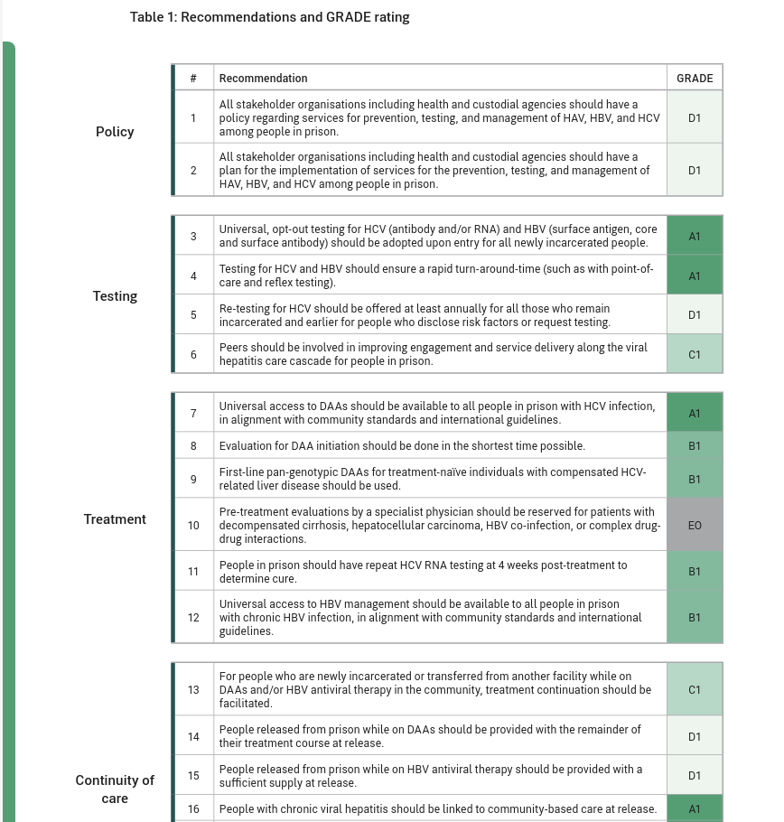

Developed in collaboration with leading clinical, public health, and organisational experts, these guidelines offer best practices for viral hepatitis care in prisons worldwide. Aimed at informing policymakers, they provide actionable recommendations to enhance prevention and clinical standards.
This toolkit is designed to strengthen your advocacy around prison-based hepatitis C services. It offers practical guidance in three key areas:
Planning Your Advocacy – Strategies to design, launch, and manage effective campaigns
Educating Stakeholders – Tools to communicate the urgency of hepatitis C prevention, testing, and treatment in custodial settings
Navigating Prison-Specific Challenges – Support for addressing the barriers unique to prison-based health careWhether you're just getting started or refining existing efforts, this resource provides a solid foundation—so you never have to start from scratch.